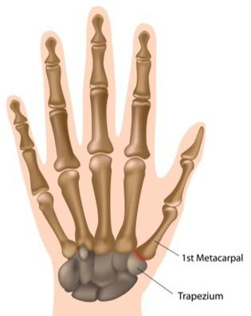
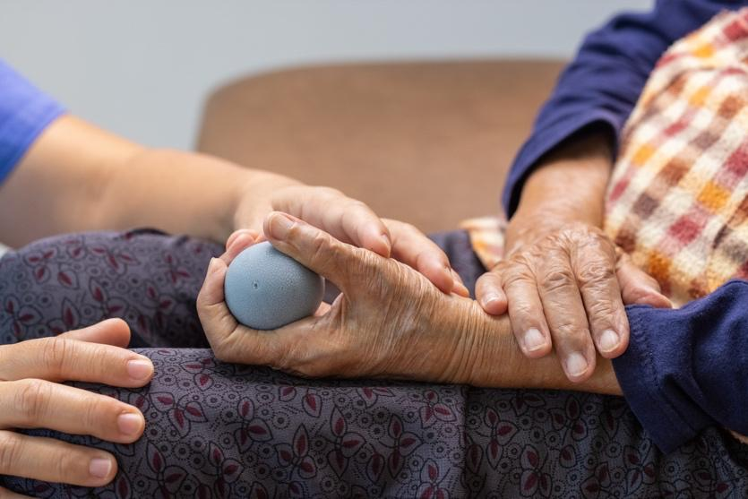

The basal joint is at the base of your thumb, where it meets the wrist. Arthritis here can cause pain, stiffness, weakness, and trouble using your thumb for daily tasks.
You may need surgery if:
Your pain is not getting better with medicine, splints, injections, or hand therapy.
You cannot use your hand like you used to.
Daily tasks, like turning keys, opening jars, or buttoning clothes, have become too painful.
Surgery is done to help you feel better, move your thumb more easily, and get back to your normal activities.

Your care team will help decide which type of surgery is right for you based on your age, activity level, and the amount of damage in your joint.
This is the most common surgery for thumb arthritis. The surgeon removes a small bone in your wrist called the trapezium. This bone is the one that rubs and causes pain. Taking it out can help your thumb move better and feel less sore.
Who may need it: Adults with moderate to severe arthritis
Possible risks: Some loss of pinch strength, swelling, stiffness, possible inward shift of the base of your thumb toward your palm
This surgery also removes the trapezium bone. Then, the surgeon uses a piece of tendon from your forearm to fill the space. This gives your thumb more support and keeps it from collapsing.
Who may need it: People who need more thumb stability
Possible risks: Pain where the tendon was taken, longer recovery time
This surgery is called arthrodesis. The bones in your basal joint are fused, or joined together, so they no longer move and rub. This stops the pain but limits some thumb movement.
Who may need it: Younger or active people who need a strong grip
Possible risks: Less movement in the thumb, possible need for more surgery
This surgery changes the position of the bone to move pressure away from the damaged joint. It is less common for thumb arthritis.
Who may need it: People with early-stage arthritis or joint misalignment
Possible risks: May not relieve all pain
The damaged joint is removed and replaced with an artificial part or spacer. This is done less often and is being studied for long-term results.
Who may need it: Some older adults or those not helped by other options
Possible risks: The Implant may wear out or shift, possibly need for more surgery

All of these procedures are usually outpatient surgeries. This means you go home the same day. You will wear a cast or splint afterward to protect your thumb.
Your care team will take X-rays. You may need other tests.
Tell your care team about any medicines you take.
You will need to stop eating or drinking at midnight before surgery.
You will get anesthesia medicine to relax you so you do not feel pain.
Surgery usually takes about 1 to 2 hours.
Your care team will watch you closely through the whole procedure.
Your thumb will be sore and swollen for a few days.
Keep your hand above your heart to reduce swelling.
Take any pain medicine as directed.
You will need to wear a splint or cast for several weeks.
Most people do hand therapy to get strength and motion back.
Recovery takes 6 to 12 weeks or sometimes longer, depending on the type of surgery.
You will need to care for your incision, keep it clean and dry, and watch for signs of infection.
Your care team is here to help. Ask us anything that is on your mind. Some possible questions include:
What surgery is best for me and why?
How long will I need to recover?
What activities should I avoid after surgery?
Will I need therapy or follow-up appointments?
How long will the results last?
Contact your care team with any questions or concerns. We want you to feel comfortable and confident about your treatment.
Thank you for trusting us with your care. We are here to support you and want you to feel your best. Contact us with any questions.
IF YOU HAVE A MEDICAL EMERGENCY, CALL 911 OR GO TO THE EMERGENCY ROOM.
The information presented is intended for general information and educational purposes. It is not intended to replace the advice of your health care provider. Contact your health care provider if you believe you have a health problem.
Last updated May 2025
© 2025 Mytonomy, Inc. All rights reserved.